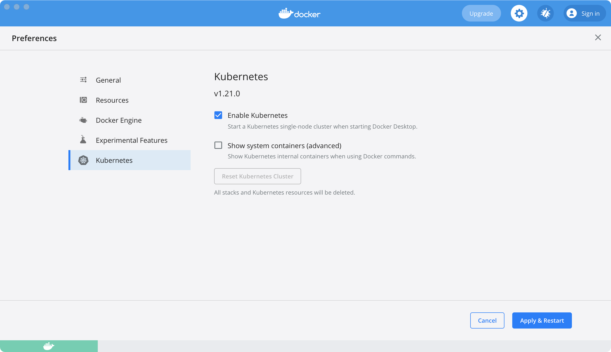
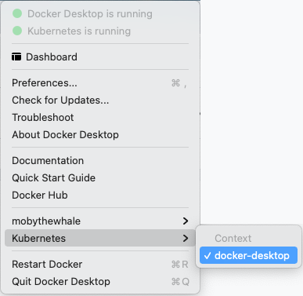

Deploy on Kubernetes
Estimated reading time: 2 minutes
Docker Desktop includes a standalone Kubernetes server and client, as well as Docker CLI integration that runs on your machine. The Kubernetes server runs locally within your Docker instance, is not configurable, and is a single-node cluster.
The Kubernetes server runs within a Docker container on your local system, and is only for local testing. Enabling Kubernetes allows you to deploy your workloads in parallel, on Kubernetes, Swarm, and as standalone containers. Enabling or disabling the Kubernetes server does not affect your other workloads.
Prerequisites
The Kubernetes client command kubectl is included and configured to connect
to the local Kubernetes server. If you have already installed kubectl and
pointing to some other environment, such as minikube or a GKE cluster, ensure you change the context so that kubectl is pointing to docker-desktop:
$ kubectl config get-contexts
$ kubectl config use-context docker-desktop
If you installed kubectl using Homebrew, or by some other method, and
experience conflicts, remove /usr/local/bin/kubectl.
Enable Kubernetes
To enable Kubernetes support and install a standalone instance of Kubernetes running as a Docker container, go to Preferences > Kubernetes and then click Enable Kubernetes.
By default, Kubernetes containers are hidden from commands like docker
service ls, because managing them manually is not supported. To see these internal containers, select Show system containers (advanced). Most users do not need this option.
Click Apply & Restart to save the settings and then click Install to confirm. This instantiates images required to run the Kubernetes server as containers, and installs the /usr/local/bin/kubectl command on your machine.

When Kubernetes is enabled and running, an additional status bar item displays at the bottom right of the Docker Desktop Settings dialog.
The status of Kubernetes shows in the Docker menu and the context points to
docker-desktop.

Upgrade Kubernetes
Docker Desktop does not upgrade your Kubernetes cluster automatically after a new update. To upgrade your Kubernetes cluster to the latest version, select Reset Kubernetes Cluster.
Use the kubectl command
Kubernetes integration provides the Kubernetes CLI command
at /usr/local/bin/kubectl on Mac and at C:\>Program Files\Docker\Docker\Resources\bin\kubectl.exe on Windows. This location may not be in your shell’s PATH
variable, so you may need to type the full path of the command or add it to
the PATH.
You can test the command by listing the available nodes:
$ kubectl get nodes
NAME STATUS ROLES AGE VERSION
docker-desktop Ready master 3h v1.19.7
For more information about kubectl, see the
kubectl documentation.
Disable Kubernetes
To disable Kubernetes support at any time, clear the Enable Kubernetes check box. This stops and removes Kubernetes containers, and also removes the /usr/local/bin/kubectl command.